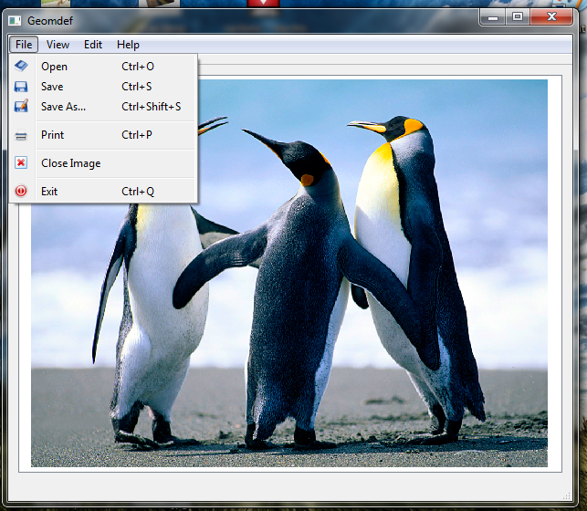
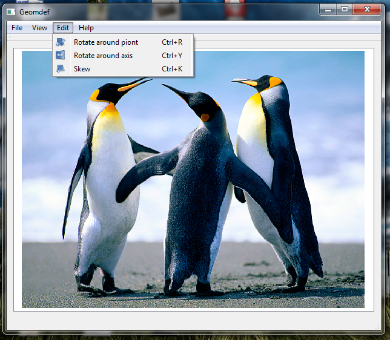
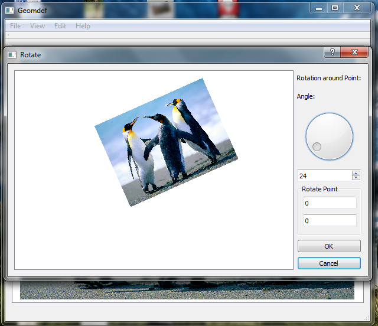
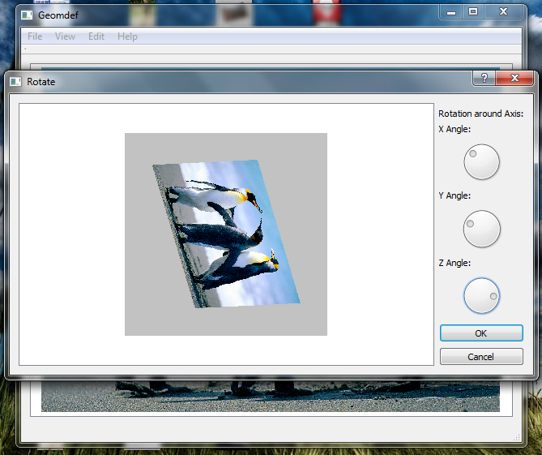
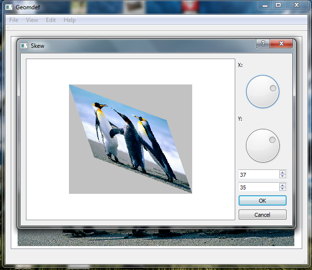

Geomdef
Podrêcznik u¿ytkownika:
Pierwsze kroki
Uwaga: Jeœli nie zainstalowa³eœ nowego oprogramowania, zacznij od przeczytania informacji o instalacji i innych czynnoœciach wstêpnych.
W dokumencie tym zostanie omówione dzia³anie programu Geomdef.
Menu Programu
I. Wczytanie pliku.
Aby wczytaæ obrazek nale¿y wybraæ z wybraæ z Menu zak³adkê File -> Open

wybieramy interesuj¹cy nas plik z szerokiej gamy obs³ugiwanych formatów.
II. Obrót wokó³ punktu.
Wybieramy z Menu zak³adkê File -> Rotate around point

Ustalamy interesuj¹ce nas parametry: k¹t i punkt obrotu

Po zatwierdzeniu operacji obrazek zostanie przetransformowany
III. Obrót wokó³ osi.
Wybieramy z Menu zak³adkê File -> Rotate around axis
Ustalamy interesuj¹ce nas parametry: k¹ty obrotu

Po zatwierdzeniu operacji obrazek zostanie przetransformowany
IV. Skew.
Wybieramy z Menu zak³adkê File -> Skew
Ustalamy interesuj¹ce nas parametry: k¹ty pochylenia

Po zatwierdzeniu operacji obrazek zostanie przetransformowany
V. Zapis do pliku.
Wybieramy z Menu zak³adkê File -> Save
Zapisujemy plik w interesujacym nas formacie
Geomdef